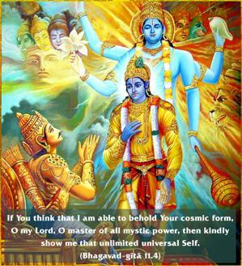
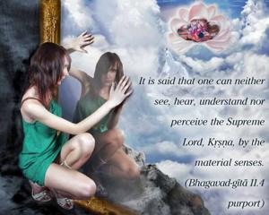

If You think that I am able to behold Your cosmic form, O my Lord, O master of all mystic power, then kindly show me that unlimited universal Self.


It is said that one can neither see, hear, understand nor perceive the Supreme Lord, Kṛṣṇa, by the material senses. But if one is engaged in loving transcendental service to the Lord from the beginning, then one can see the Lord by revelation. Every living entity is only a spiritual spark; therefore it is not possible to see or to understand the Supreme Lord. Arjuna, as a devotee, does not depend on his speculative strength; rather, he admits his limitations as a living entity and acknowledges Kṛṣṇa’s inestimable position. Arjuna could understand that for a living entity it is not possible to understand the unlimited infinite. If the infinite reveals Himself, then it is possible to understand the nature of the infinite by the grace of the infinite. The word yogeśvara is also very significant here because the Lord has inconceivable power. If He likes, He can reveal Himself by His grace, although He is unlimited. Therefore Arjuna pleads for the inconceivable grace of Kṛṣṇa. He does not give Kṛṣṇa orders. Kṛṣṇa is not obliged to reveal Himself unless one surrenders fully in Kṛṣṇa consciousness and engages in devotional service. Thus it is not possible for persons who depend on the strength of their mental speculations to see Kṛṣṇa.